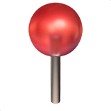
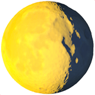

This page fetches real-time updates from NASA API to show the current position, speed, and crew of the ISS.
This page fetches real-time updates from NASA API to show the current position, speed, and crew of the ISS.
➲ The ISS orbits Earth at about 28,000 km/h. This tracker shows its real-time location, speed, and crew.
Location: Loading...
 Latitude: --°
Longitude: --°
.png) Speed: -- km/h
Speed: -- km/h
 / .png) Time: --
Time: --